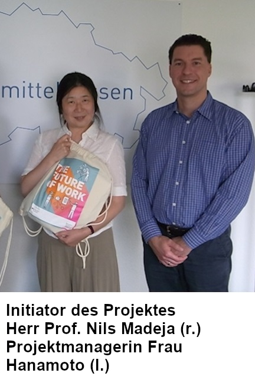
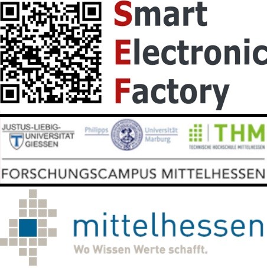
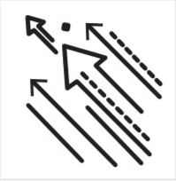

DIGIMARI - dejimari
Digital Manufacturing Research Initiative
Kurzinformation zum Projekt Digimari
 Im Rahmen des Projekts Digital Manufacturing Research Initiative (DIGIMARI) forscht die Technische
Hochschule Mittelhessen (THM) künftig mit finanzieller Unterstützung des Bundesministeriums für
Bildung und Forschung (BMBF), um die digitale Transformation von Unternehmen voran zu treiben.
Partner des Projektes sind die Universitäten Gießen und Marburg, das Regionalmanagement
Mittelhessen sowie ein Verbund aus 30 Unternehmen, die regionale "Smart Electronic Factory".
Aber auch der Deutsch-Japanische Wirtschaftskreis (DJW) unterstützt uns tatkräftig.
Durch das Projekt im Rahmen der BMBF-Kampagne "The Future of Work", das eineinhalb Jahre läuft,
sollen potenzielle japanische Partner aus der industriestarken Kansai-Region gewonnen werden.
Diese Region kann als das "industrielle Herz Japans" bezeichnet werden, da sie neben einigen
bedeutenden Großunternehmen auch viele kleine und mittlere Unternehmen des produzierenden Gewerbes beheimatet.
Weiterhin sind dort viele namhafte Forschungs- und Bildungseinrichtungen ansässig. Diese bilden die beiden Zielgruppen unseres Projekts.
Durch die länderübergreifende Zusammenarbeit werden digitale Geschäftsmodelle entwickelt,
Innovationen digitaler Prozesse in der Produktionskette gefunden und Know-how transferiert.
Forschungsnetzwerk Mittelhessen
Im Zuge des Projektes Digimari haben sich leistungsstarke Partner aus der Wirtschaft und unternehmerischen Praxis zum Forschungsnetzwerk Mittelhessen zusammengeschlossen.
Somit entsteht eine breite und ideale Aufstellung für die Digitalisierung der industriellen Fertigung.
Partner:
-

- Smart Electronic Factory (SEF) Mehr als ca. 30 Unternehmen der Elektroindustrie und Forschungspartner
- Forschungscampus Mittelhessen (FCMH) Verbund der drei Mittelhessischen Hochschulen
- Regionalmanagement Mittelhessen Mehr als 250 Unternehmen, Institutionen, Kommunen und Einzelpersonen
Geplante Maßnahmen
Folgende Maßnahmen sind im Zuge des Projektes geplant:
-

- Marketingmaßnahmen Neben der Direktansprache potenzieller Kooperationspartner sollen auch reichweitenstarke Online-Kanäle (Website und Social Media) etabliert werden. Zwei Delegationsreisen in die Zielregion, im Rahmen derer wir eine Roadshow durchführen und ein Symposium abhalten werden, dienen zur Erhöhung der Reichweite des Projektes.
- Zentraler Service Desk Es wird ein Projektmanagement-Büro eingerichtet, das als zentrale Anlaufstelle (Service Desk) fungiert und sämtliche Aktivitäten des Projekts koordiniert.
Leistungsangebot und Zielsetzung
Zielsetzung des Projekts DIGIMARI - "Digital Manufacturing Research Initiative" - ist es, unser Forschungsnetzwerk Mittelhessen in Japan zu vermarkten, um Kooperationsprojekte auf dem Gebiet der Digitalisierung kleiner und mittelgroßer Produktionsunternehmen einzuwerben.
- Partnerschaften Gemeinsame Forschungsprojekte und Forschungskooperationen bilden um vergleichende Forschung besonders auf den Ebenen der Organisation und der Geschäftsmodelle zu betreiben.
- Testplattform Bereitstellung von Demonstrations- und Forschungsplattformen. Gemeinsamer Aufbau einer analogen Forschungsplattform in Japan bzw. einer gemeinsamen länderübergreifenden Forschungsplattform.
- Know-How-Transfer Aufbau und Realisierung von Demonstratoren der Digitalisierung zum Testen der Konzepte (POC). Austausch von Erfahrungen und Konzepten.
PROJEKTINFORMATION
- Federführung beim Projekt
- Technische Hochschule Mittelhessen
- Sitz des Projektmanagement Büro
- Giessen, Germany
- Projektpartner in Deutschland
- Forschungscampus Mittelhessen
- Regionalmanagement Mittelhessen
- Smart Electronic Factory e.V.
- Zielland
- Japan